AccordionContext management for AI coding agents
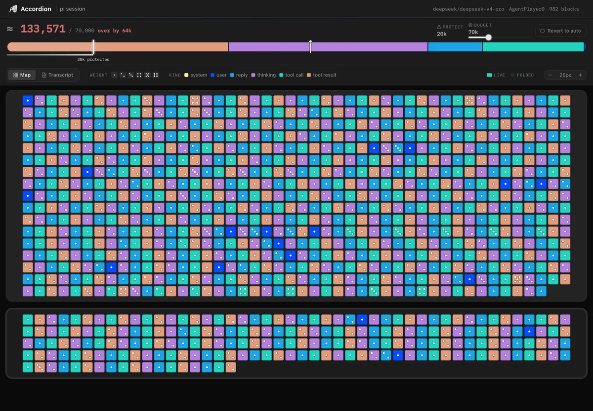
Projects
AI tools, hardware, public safety, and systems programming. A mix of independent builds, team projects, and UCSD coursework.

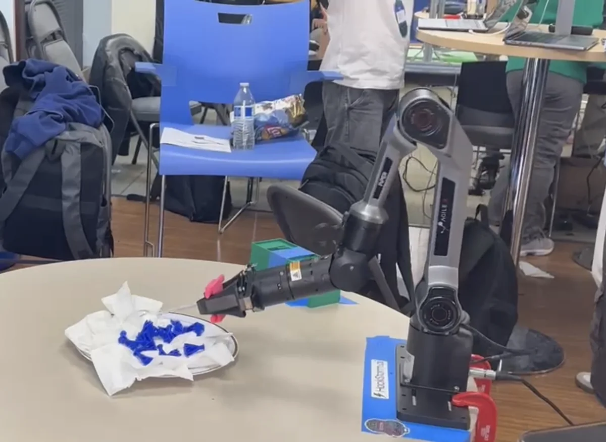
Guides a robotic arm through feeding tasks.
Connects camera input to real-time arm control.
Python · FastAPI · CAN bus · macOS CAN stack · AgileX Piper · MediaPipe · Orbbec depth · Waypoint replay · 100 Hz control
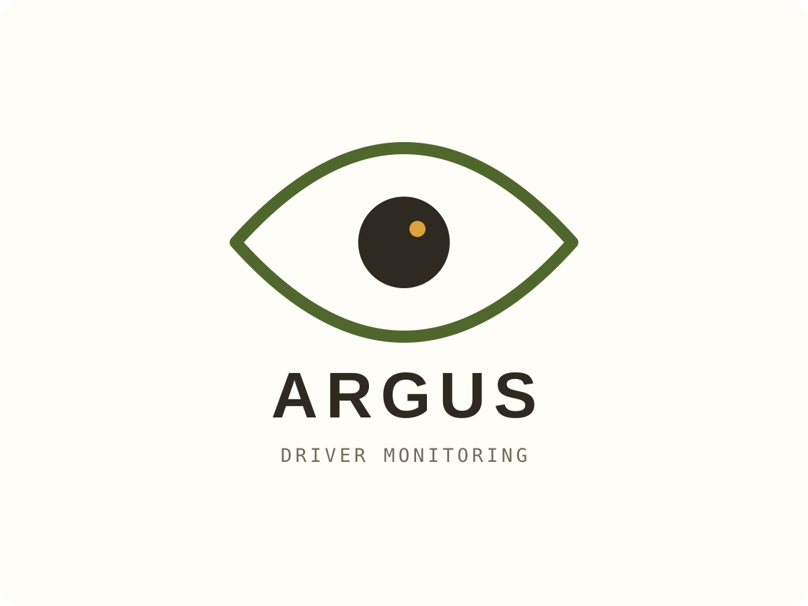
Detects driver distraction on a Raspberry Pi.
Combines phone, eye, and head-pose tracking.
Python · Raspberry Pi · YOLO · ncnn · MediaPipe · ZeroMQ · Driver locking · PERCLOS · Risk scoring · Edge inference
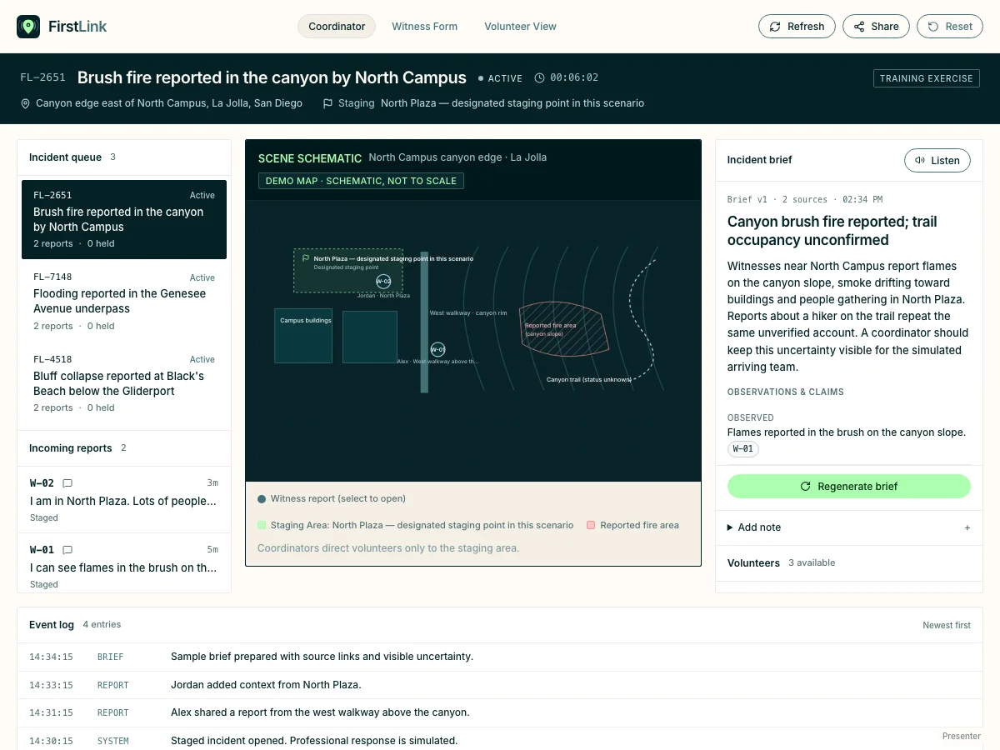
Connects witnesses, dispatchers, and volunteers.
Turns incident reports into shared context.
Next.js · TypeScript · PostgreSQL · Neon · Gemini · ElevenLabs · Incident briefs · Voice notes · Volunteer coordination
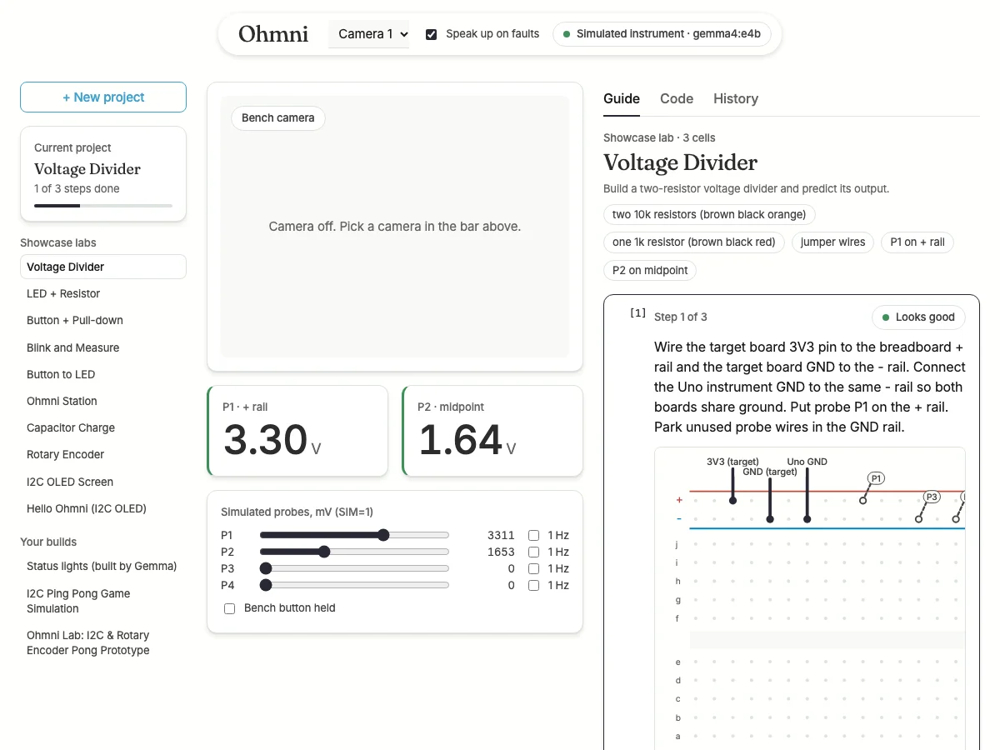
Helps students debug circuits and embedded code.
Combines live readings, photos, and compiler output.
Python · Arduino Uno · ESP32 · Gemma · Ollama · Monaco · Serial telemetry · Circuit diagnostics · Compile and upload · Voice
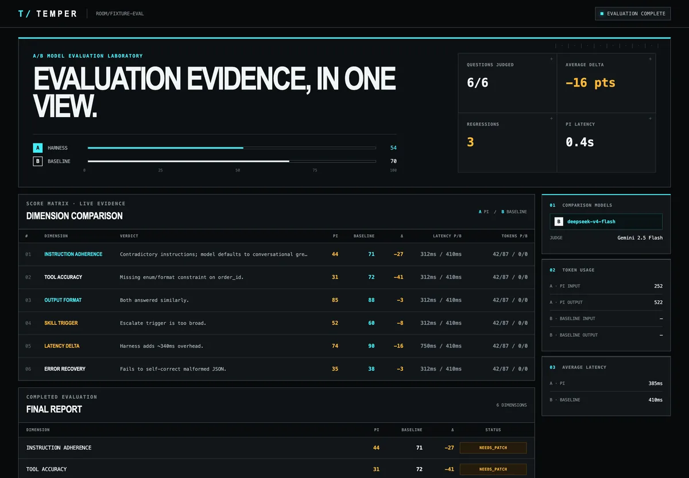
Evaluates the harness around an AI model.
Compares a baseline and proposes fixes.
Python · FastAPI · Gemini · LLM evaluation · LLM-as-judge · Remediation · Live dashboard · Shared sessions
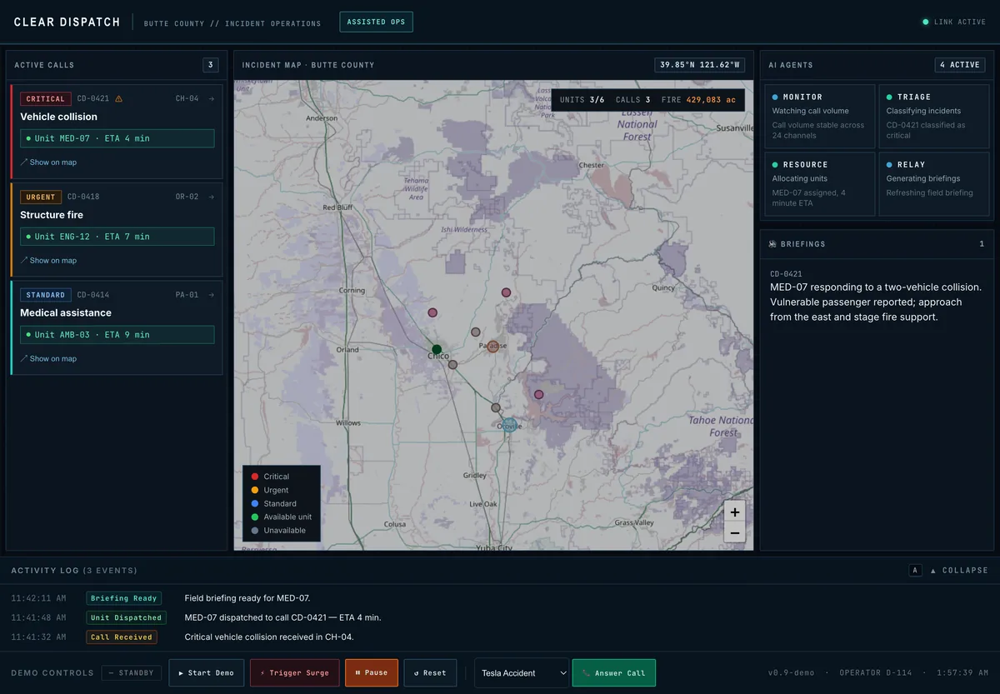
Helps dispatchers manage wildfire calls.
Connects live triage, maps, and voice.
React · TypeScript · FastAPI · WebSocket · Leaflet · Transcription · Voice integration · Multi-agent routing · Audit controls
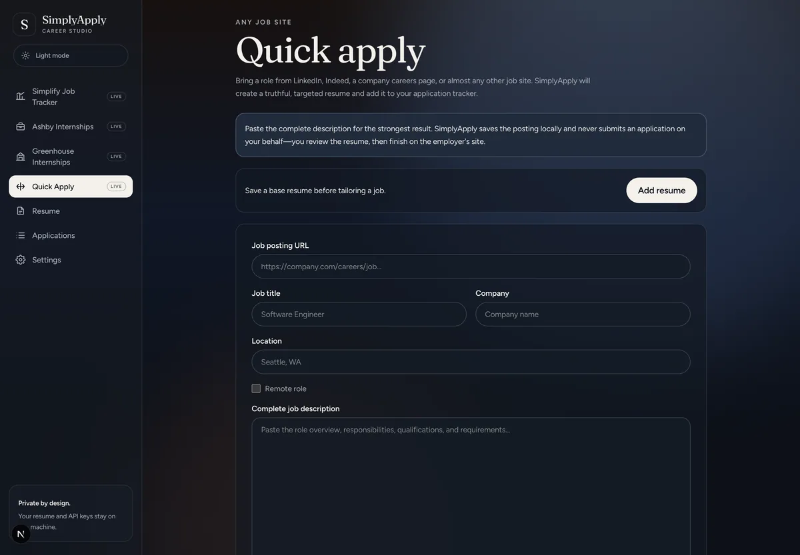
Tracks internships and tailors applications.
Keeps resume claims grounded in real experience.
Next.js · TypeScript · Python · FastAPI · Docker · LLM adapters · Job boards · ATS review · PDF · DOCX
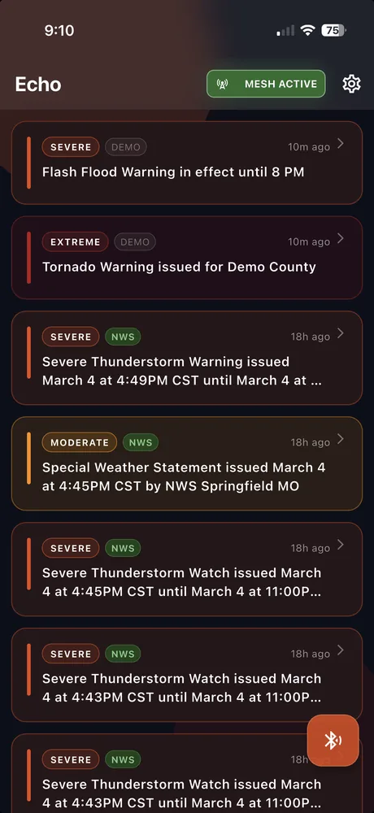
Relays emergency alerts between nearby phones.
Keeps messages moving without internet.
Flutter · BLE GATT · SQLite · Python · Mesh relaying · Chunking · Deduplication · Background scans · Multilingual alerts
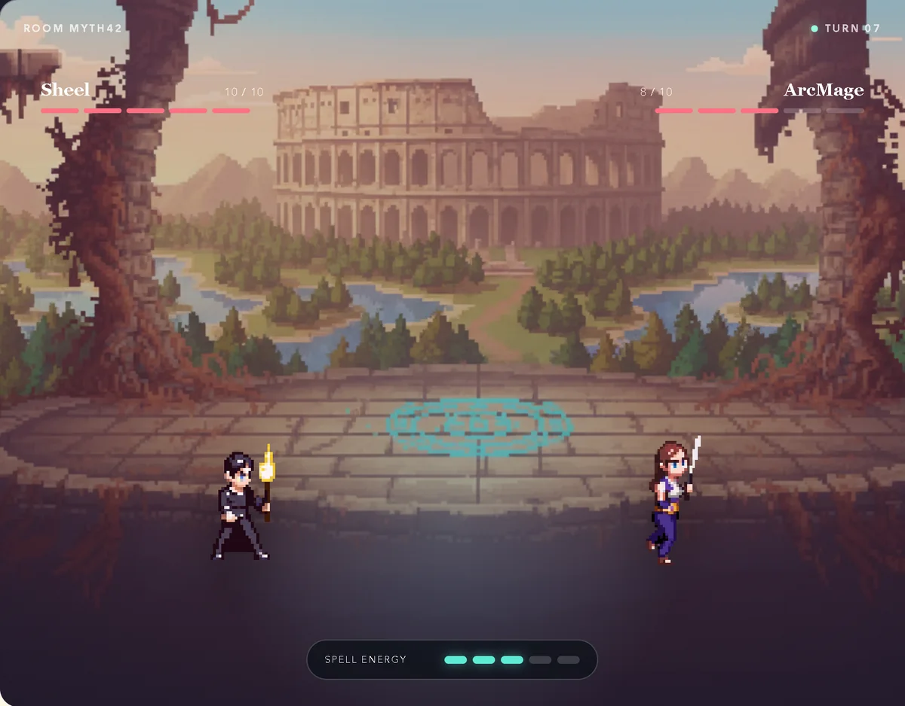
Turns lecture PDFs into multiplayer quiz duels.
Syncs questions and combat in real time.
TypeScript · Vite · Node.js · WebSocket · Gemini API · PDF parsing · Canvas · Room codes · Round synchronization
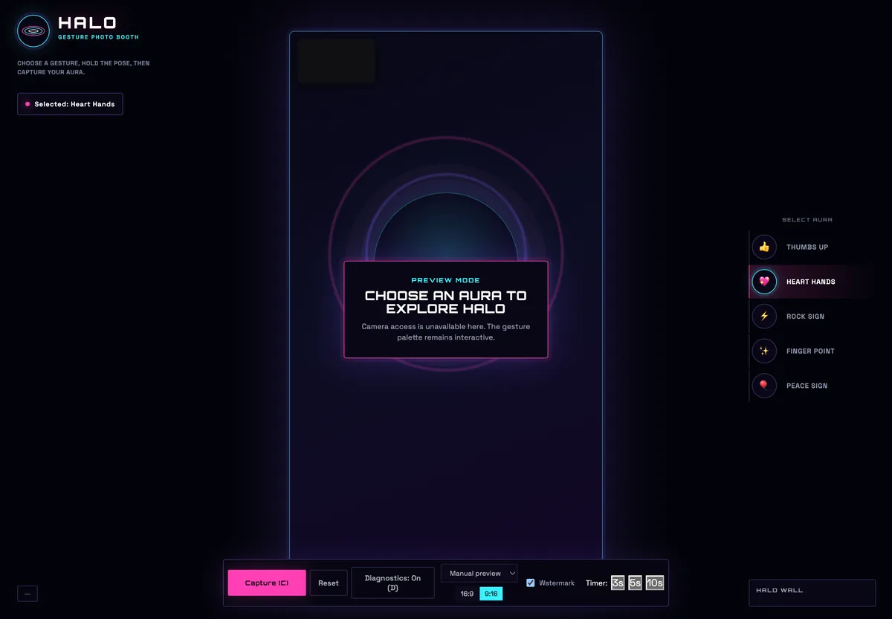
Turns hand gestures into live photo effects.
Captures and shares the result from a browser.
TypeScript · MediaPipe · Canvas · Python · Gesture locking · Pose tracking · PNG export · QR sharing · Performance HUD
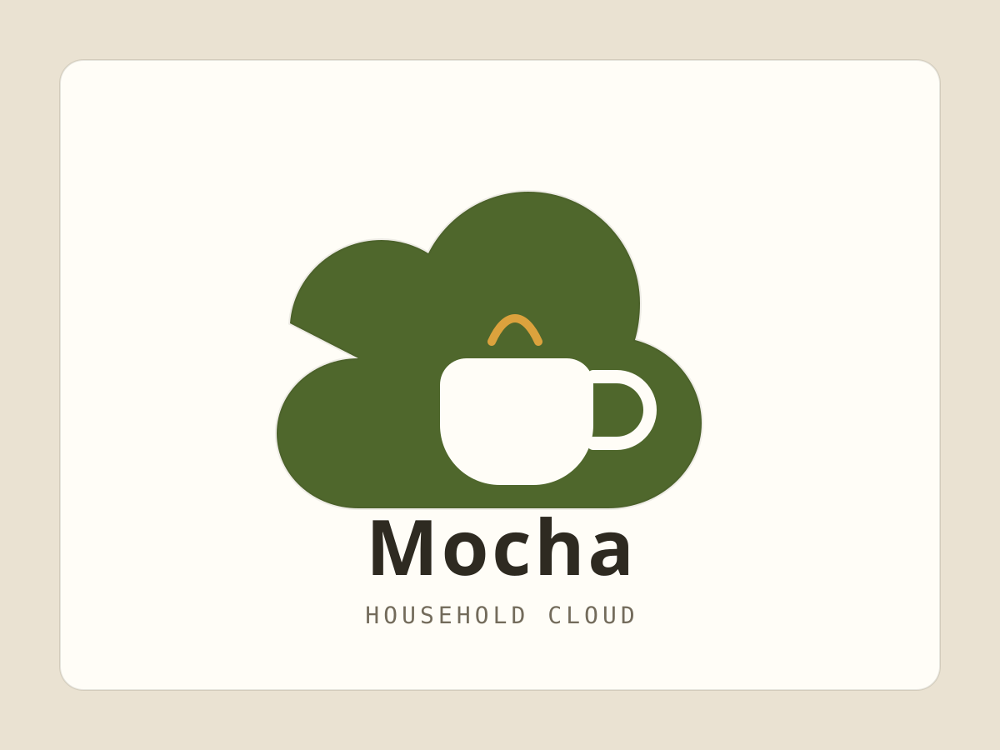
Hosts a household cloud on my own hardware.
Connects private services, storage, and recovery.
Proxmox · ZFS · RAID · Nextcloud · Immich · Jellyfin · Cloudflare · Tailscale · FastAPI · Backups
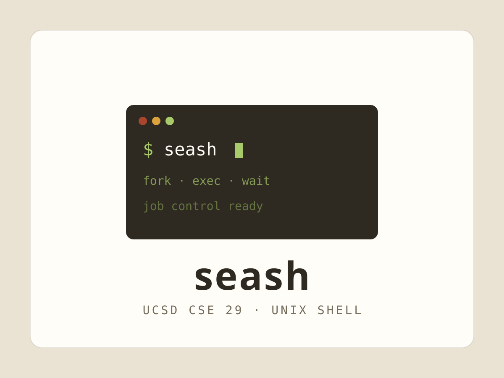
Runs commands interactively or from scripts.
Manages background jobs and command history.
C · Unix · POSIX APIs · fork · execvp · waitpid · Background jobs · Built-ins · Persistent history
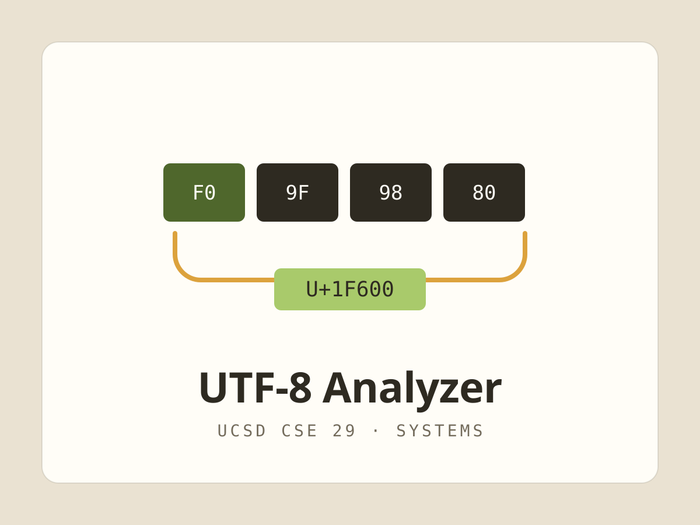
Inspects UTF-8 strings one codepoint at a time.
Parses byte sequences and extracts substrings.
C · UTF-8 · Bitwise operations · Codepoints · Byte offsets · String parsing · ASCII conversion · Emoji classification
No projects match these filters.